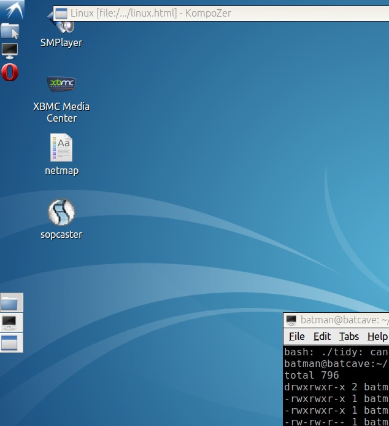

| Linux -
Moving from 32bits To 64bits
(Nov
2019) (updated for lubuntu 18.04) |
Sticking wit Lubuntu 12.04 to 18.04 Make an Installer stick Installing Lubuntu 32 to 64 |
|
Lubuntu 12.04 had been faithful and always
lived up to expectations. Alas, the world has moved on to 64 bits. This is a re-vamped guide that promotes Lubuntu and to show the jump I made from Lubuntu 12.04 32bits to 18.04 64bits. |
 |
| How to
make a Lubuntu Installer stick (from
Linux) First, download the CD image. Download the latest Lubuntu Live CD image (.iso). from the Lubuntu website. Transfer the live CD installer image to a USB pendrive. Make sure you have an empty USB stick (at least 8GB) and plug it in.Method 1 Install UnetbootinMethod 2 (linux only) For linux you can copy the raw .iso file as-is by using the command dd.You should end up with a bootable installer stick. This is the stick you will install with, NOT the target stick. The target stick has to be seperate. |
| How to
Install Lubuntu
To a USB Stick 1. Reboot your target machine with the installer stick, set your bios to boot from USB if needed. you will end up with a live desktop and you can generally mess around trying out the apps. There should be one Installer icon on the desktop, don't click it yet. 2. Plug in your target USB stick (at least 4GB) so that the installer recognises it and just say 'no' if it wants to open a file manager. Open an LXTerminal (from Accessories) , and type; >mount You will see some mounts. The last one with the word "media" will be the target stick, e.g /dev/sdb1 Remember this because e.g "sdb1" will be the partition to install to when you run the Installer icon. 3. Run the Installer icon. Say 'yes' if it wants to un-mount your target stick. Installation Type: Choose 'Something Else' when it comes to the partitions. Select your target stick e.g 'sdb1' and click 'Change' Choose Use As 'ext4'. (choose to format it) Mount point as '/'. Device for 'boot loader installation' should be e.g /dev/sdb1 NOT /dev/sdb This is important, choosing the wrong one will overwrite the MBR with GRUB's which is not what we want. (We don't want to touch the MBR, just the VBR, I found this method more reliable for booting). Click Install. Ignore any swap space, we don't want it (this is a single partition). After installation, you have a choice A) Take out the installer stick and reboot. That is, stay with GRUB's VBR on the boot sector and hope it boots. or B) Install EXTlinux, a reliable bootloader. If you need a boot manager to multi-boot other OSs, I recommend Ranish for legacy MBR systems, or Plop Boot Manager or rEFInd for modern uefi systems. If you are already using the Windows boot manager you can add an entry with the EasyBCD (free version). |
| Running
32bit software on to 64 bits After installing a 64 bit Lubuntu, all the software installed are made to run on a 64 bit system. The repositories installed (for apt or Synaptic package manager) contain 64 bit software. There might be situations when you need to use 32bit software, usually when the 64 bit versions aren't available. Can you run 32bit software on 64 bit systems ? Yes, but you need two things; a) 32bit system support and b) 32bit libraries. Thankfully many linux systems have support for this; sudo dpkg --add-architecture i386 sudo apt-get update But be aware that 32 bit software will have a lot of 32-bit dependencies. Those will have to be installed too. e.g For c libraries and compiler support; sudo apt-get install libc6:i386 libncurses5:i386 libstdc++6:i386 sudo apt-get install gcc-multilib |
Click here for More Lubuntu Tips |